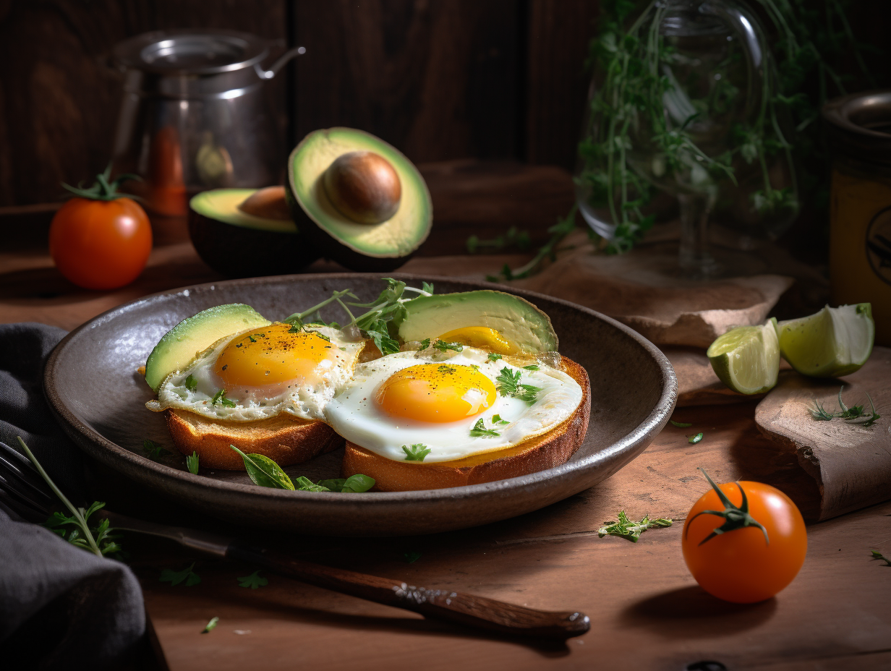
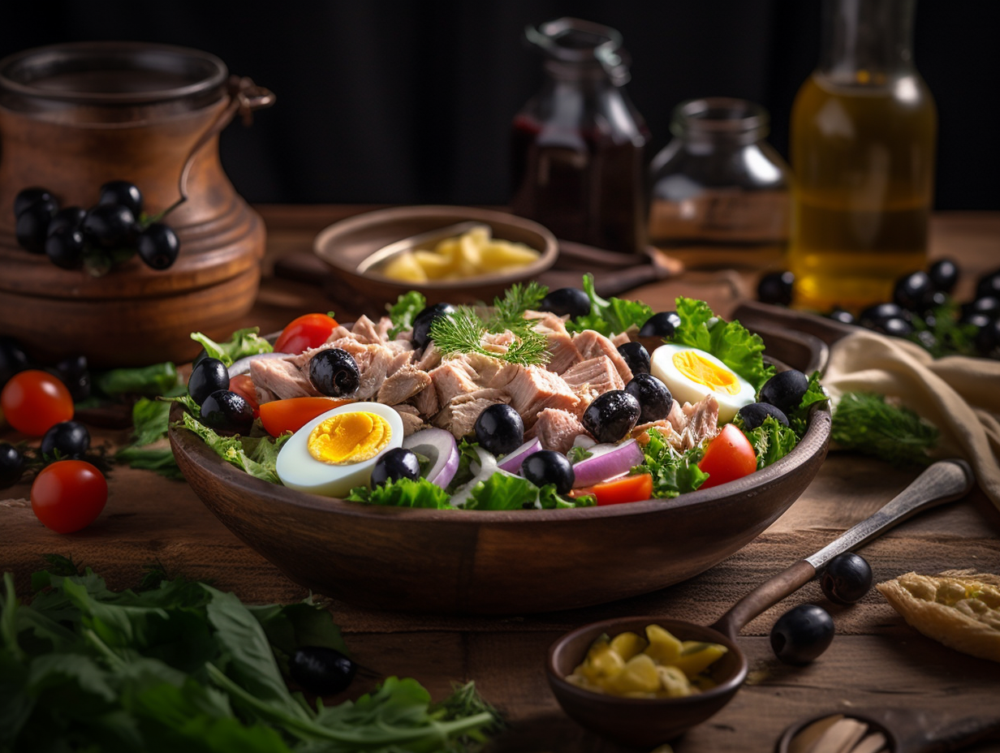
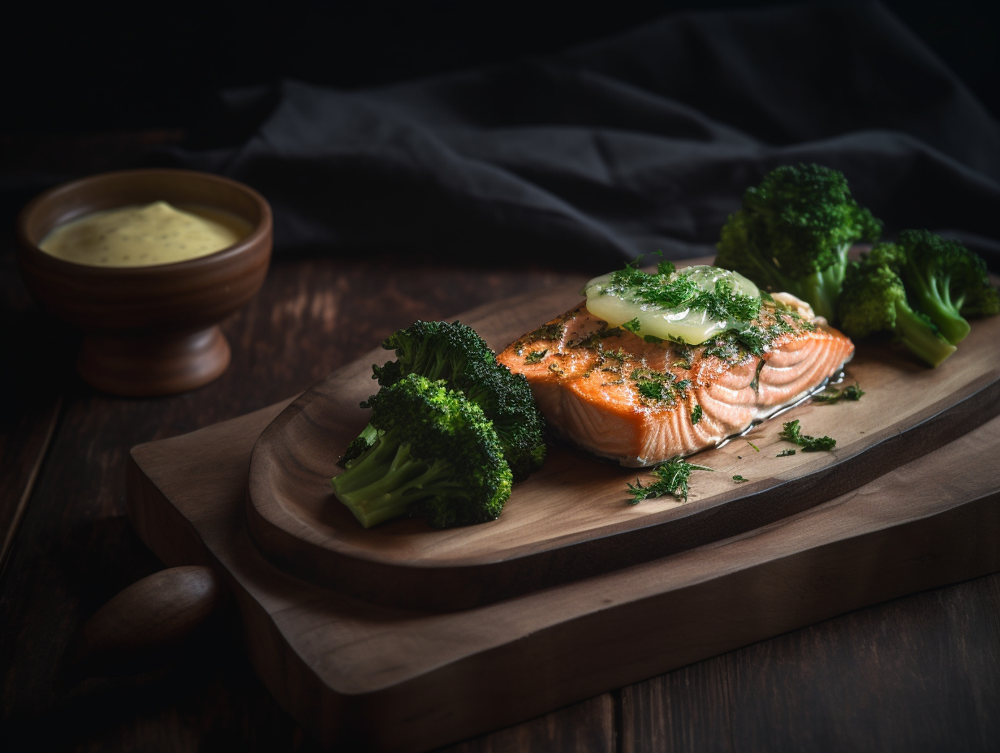
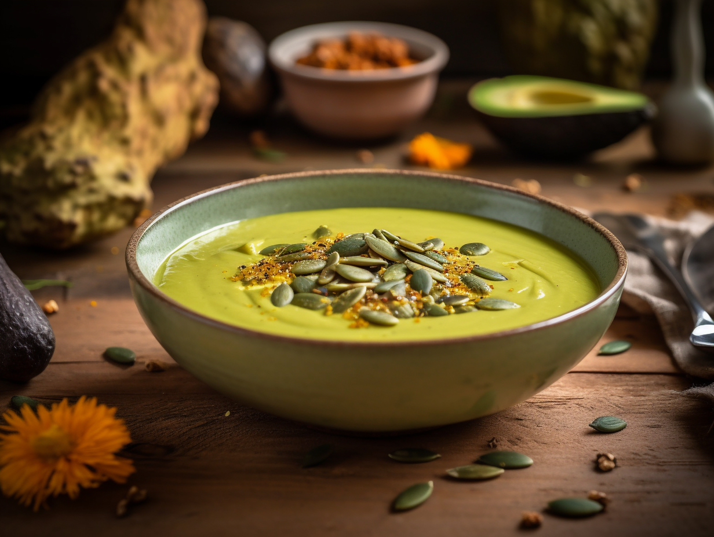

Dieta ketogeniczna
Dieta niskowęglowodanowa, bogata w tłuszcze, przeznaczona dla osób szukających skutecznego sposobu na redukcję wagi i poprawę metabolizmu.
Zamów dietę – zadzwoń: +48-789-800-525Czym jest dieta pudełkowa ketogeniczna?
Dieta ketogeniczna to specjalnie skomponowany plan żywieniowy o bardzo niskiej zawartości węglowodanów i wysokiej zawartości tłuszczów. Jej celem jest wprowadzenie organizmu w stan ketozy, w którym organizm przestawia się na spalanie tłuszczu zamiast glukozy jako głównego źródła energii. To skuteczne rozwiązanie dla osób chcących zredukować masę ciała i poprawić metabolizm.
Dla kogo jest zalecana dieta ketogeniczna?
osoby pragnące schudnąć
osoby z problemami metabolicznymi
osoby szukające zwiększenia energii i poprawy koncentracji
osoby z cukrzycą typu 2 (po konsultacji z lekarzem)
Nasza dieta ketogeniczna jest szczególnie polecana dla osób, które chcą świadomie kontrolować poziom cukru we krwi i efektywnie redukować masę ciała.
Jakie są korzyści z diety ketogenicznej?
Utrata masy ciała
Efektywne spalanie tkanki tłuszczowej
Zwiększenie energii
Stabilny poziom energii przez cały dzień
Poprawa metabolizmu
Optymalizacja procesów metabolicznych
Kontrola cukru
Lepsza kontrola poziomu cukru we krwi
Redukcja apetytu
Naturalne zmniejszenie uczucia głodu
Z czego składają się posiłki w diecie ketogenicznej?
Nasze posiłki są komponowane ze starannie dobranych składników o niskiej zawartości węglowodanów:
- Zdrowe tłuszcze (oliwa, masło, awokado)
- Różne rodzaje mięs i ryb
- Jaja i pełnotłusty nabiał
- Warzywa niskowęglowodanowe
- Orzechy i nasiona
- Zioła i przyprawy
Jakie są przykładowe dania w cateringu dietetycznym w wersji ketogenicznej?
Nasza dieta składa się z 4 zbilansowanych posiłków dziennie, dostarczanych w wygodnych opakowaniach. Oto przykładowe menu:

Śniadanie
Jajka sadzone na maśle klarowanym z awokado i pomidorami

II śniadanie
Sałatka z tuńczykiem, jajkiem, oliwkami i oliwą z oliwek

Obiad
Łosoś pieczony z brokułami i masłem czosnkowym

Kolacja
Krem z awokado z oliwą z oliwek i pestkami dyni
Ile kosztuje catering dietetyczny w wersji ketogenicznej?
Oferujemy różne warianty kaloryczne w atrakcyjnych cenach:
1200 kcal
49.90 zł / dzień
1500 kcal
51.90 zł / dzień
1800 kcal
54.90 zł / dzień
2200 kcal
59.90 zł / dzień
2600 kcal
62.90 zł / dzień
3000 kcal
66.90 zł / dzień
Do podanych cen należy doliczyć 6 zł za dostawę.
Rozpocznij swoją przygodę z dietą ketogeniczną
Zamów dietę ketogeniczną i ciesz się korzyściami zdrowego odżywiania niskowęglowodanowego.
Zamów dietę – zadzwoń: +48-789-800-525